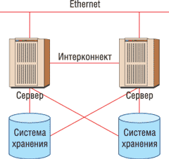

Александр Николов
anikolov@bytemag.ru
Надежность корпоративных систем обработки данных, их способность ежесекундно обеспечивать пользователей оперативной и достоверной информацией - одно из важнейших условий эффективной работы и, в конечном счете, конкурентоспособности современных компаний. Сегодня существует множество технических решений, обеспечивающих необходимый уровень надежности и отказоустойчивости информационных систем, и один из краеугольных камней таких решений - кластеризация серверных систем, за счет которой поддерживается высокий уровень готовности (high availability).
Говоря о кластерных системах высокой готовности, необходимо четко понимать, что основополагающим элементом стратегии развертывания подобных систем на предприятии выступает отнюдь не используемое в них аппаратное или программное обеспечение, а набор грамотных экспертно-аналитических и консультационных услуг, предоставляемых либо самим поставщиком кластеров, либо его партнером-интегратором, и нацеленных на адаптацию имеющихся типовых программно-аппаратных решений к реальным требованиям и условиям информационной системы заказчика. Построение эффективной и качественной кластерной системы высокой готовности представляет собой достаточно сложную задачу, решение которой требует от поставщика глубоких знаний и опыта, хотя сам процесс опирается на использование стандартизованных программных и аппаратных средств. В известной степени можно утверждать, что каждая новая реализация кластерной системы высокой готовности - это "штучный товар" и в определенном смысле уникальная задача, решение которой не терпит легкомысленного отношения ни со стороны поставщика, ни со стороны заказчика.
Еще один важный вопрос, часто возникающий при построении кластерных систем высокой готовности, - адекватность используемых аппаратных средств решаемым с их помощью задачам. Построение отказоустойчивых кластеров предполагает использование в качестве узловых машин высоконадежных серверов с двукратным, а иногда и многократным, дублированием всех основных блоков и компонентов. Противоположный подход, привнесенный из области вычислительных кластерных систем и проповедуемый некоторыми поставщиками, состоит в том, что сама кластерная архитектура признается единственным необходимым и достаточным условием для обеспечения высокой готовности систем обработки данных, а аппаратная база отдается на откуп дешевым, легко заменяемым и ненадежным компонентам. Этот подход не только ошибочен, но даже опасен, так как дает заказчикам лишь иллюзию высокой готовности и надежности их информационно-вычислительных систем.
И наконец, последнее отступление: перед тем как перейти к непосредственному рассмотрению типовых решений для построения кластерных систем высокой готовности от трех ведущих в этой области поставщиков - Sun, IBM и HP, полезно будет в общих чертах напомнить о теоретической и технологической сторонах кластеризации. Типовая схема кластерной системы высокой готовности, изображенная на рисунке, подразумевает объединение двух или более (в зависимости от конкретной решаемой задачи) серверов в целостную систему, снаружи видимую пользователями как единый сервер, исполняющий то или иное корпоративное приложение, например, СУБД или ERP-систему.
|  | Типовая схема кластерной системы высокой готовности.
|
Для связи вовне и передачи данных от потребителей и к ним в большинстве случаев используется стандартное соединение Fast Ethernet или получающий все большее распространение стандарт Gigabit Ethernet, реже - ATM. Между собой серверы общаются посредством так называемого интерконнекта - специальной выделенной сети для синхронизации состояний и посылки команд перезапуска заданий на резервном узле в случае обнаружения сбоев или отказов на основном. Набор вариантов для организации интерконнекта достаточно широк - от хорошо известных и достаточно распространенных Myrinet, InfiniBand или Scalable Coherent Interface (SCI) до узкоспециализированных фирменных разработок, - и поставщики могут применять любой из них по собственному усмотрению, лишь бы он обладал достаточной скоростью. Тут важно отметить, что, в отличие от вычислительных кластеров, где между узлами передается значительный объем информации и соответственно возникает потребность в высокой пропускной способности, в кластерных системах высокой готовности, за исключением служебных команд, между узлами практически нет обмена трафиком, однако сами команды должны передаваться максимально быстро, и потому здесь используются стандарты с как можно меньшим временем задержки.
Взаимодействие с системами хранения, как и в случае с высокопроизводительными серверами, организовано максимально гибко: можно использовать любые схемы и протоколы - от прямого подключения до решений NAS и SAN, присоединяемых по оптоволокну. Здесь основную роль играют потребности заказчика и реальные условия его системы, исходя из которых и выбирается конкретное решение. Естественно, во все этих случаях сетевые интерфейсы для повышения надежности как минимум дублируются.
Наконец, еще один важный момент, на котором стоит остановиться чуть подробнее. Реальные кластерные системы высокой готовности строятся в одной из двух базовых архитектур - с разделением ресурсов (share something) или без разделения ресурсов (share nothing). В первом случае (яркий пример - Oracle Real Application Clusters) благодаря внутренней логике промежуточного ПО задача заказчика "размазывается" по серверам, входящим в кластер (вот где видна реальная польза от включения в кластерную систему нескольких серверов сразу), и на каждом сервере исполняется некоторая ее часть. Такой подход позволяет повысить эффективность вложения средств, удачно сочетая высокую отказоустойчивость и производительность на относительно недорогих аппаратных средствах. Во втором случае задача заказчика целиком и полностью решается на головном узле системы, а второй сервер фактически играет роль горячего резерва, способного в любой момент времени подхватить "упавшее" приложение. Какой вариант организации кластерной системы использовать, зависит от уже развернутой в компании ИТ-инфраструктуры и в каждом конкретном случае определяется исходя из задач заказчика и программных сред для их решения.
Вот, пожалуй, и все. А теперь перейдем к конкретике.
Отказоустойчивые кластеры Sun
Стратегия компании Sun Microsystems (http://www.sun.ru) в отношении кластерных систем высокой готовности строится на трех китах - собственные аппаратные средства, собственная ОС и сервисы кластеризации и, наконец, собственные консультационно-аналитические услуги по доводке типового решения с учетом нужд заказчика. Надо признать, в таком подходе много здравого смысла - взяв в свои руки все нити, ведущие к созданию законченной кластерной системы, компания гарантирует заказчику качество реализации, унификацию используемых решений и соответствующий уровень сервиса, что в конечном счете позволяет не только снизить расходы на внедрение, но и значительно ускорить его.
В качестве рекомендованной аппаратной базы Sun предлагает заказчикам широкий спектр серверов на основе процессоров семейства UltraSPARC - младшие модели семейства Netra на базе UltraSPARC IIi и Sun Fire на базе UltraSPARC IIIi, старшие модели этих же семейств на базе UltraSPARC III, модели высшего уровня семейства Sun Fire на базе UltraSPARC IV, а также, что особенно важно, - модель Sun Fire V40z на базе процессора AMD Opteron. Кроме того, по мере выхода новых серверных систем Sun проводит диагностику на предмет их соответствия требованиям кластеризующего ПО, так что сам список постоянно обновляется, пополняясь новыми и теряя устаревшие модели. Подобный подход гарантирует заказчикам не только сохранность инвестиций в ИТ-инфраструктуру, но и наилучшую отдачу от них - на начальном этапе клиенты могут развернуть кластер на "малых", но все же достаточно производительных серверах, избежав закупок избыточного оборудования, а с ростом нагрузки и расширением круга решаемых задач безболезненно перейти на "тяжелое", но более производительное оборудование.
Предлагая заказчикам достаточно широкий набор узлов для построения отказоустойчивой системы, Sun все же рекомендует изначально закладывать в проект будущего кластера высокой готовности повышенные требования к надежности аппаратуры и применять везде, где это необходимо и возможно, дублирование критически важных компонентов. Собственно, по методологии Sun необходимым и достаточным условием использования того или иного сервера в качестве узла отказоустойчивого кластера, даже если он не включен в список сертифицированных для этих целей, служит возможность многократного аппаратного резервирования его элементов. Таким образом, даже если у заказчика имеется некоторое не самое современное, но подходящее по этому параметру серверное оборудование, он в принципе может организовать кластерную систему высокой готовности. В свою очередь, компания проектирует все свои новые серверы с таким расчетом, чтобы было легко заменить вышедший из строя компонент, не останавливая работы всей системы.
В качестве интерфейсов для организации интерконнекта между серверами Sun предлагает использовать встроенные в них 100-Мбит/с адаптеры, адаптеры Sun Quad FastEthernet, Sun FastEthernet или Sun SwifT. Можно также воспользоваться высокоскоростным соединением Gigabit Ethernet или (при помощи адаптера, устанавливаемого в PCI-гнездо) интерфейсом SCI. Если кластер организуется с использованием ПО Oracle Real Application Clusters, весьма чувствительного как к задержкам, так и к скорости передачи для интерконнекта, Sun предлагает использовать решения стандарта InfiniBand, в том числе и поставляемые сторонними компаниями (например, Topspin Communications и SilverStorm Technologies), но сертифицированные корпорацией на соответствие своим требованиям.
Для взаимодействия с дисковыми хранилищами данных предлагаются стандартные SAN-совместимые адаптеры и коммутаторы - в число рекомендованного оборудования входят модели Sun StorEdge Network 1 GB FC Switch-8 и Switch-16, Sun StorEdge Network 2 GB FC Switch-8, Switch-16 и Switch-64; продукция компании Brocade - модели Silkworm 2400, 2800, 3200, 3800, 3900 и 12000 и устройства McData 4300, 4500, 6064, 6140 одноименной компании.
Вряд ли кого-то удивит, что в качестве узловых ОС в решениях Sun используется ОС Solaris версий 9 и 10. В качестве промежуточного слоя, отвечающего за объединение серверов в кластер высокой готовности, выступает программный пакет Sun Cluster 3.1. В рамках одного кластера он позволяет объединять до 16 узлов и, что, вероятно, будет небезынтересно пользователям ПО Oracle, поддерживает в качестве базовых файловых систем Solaris UFS, Veritas File System (VxFS) и Sun StorEdge QFS с возможностью быстрого развертывания Oracle9i RAC. Кроме того, с его помощью можно территориально разносить узлы на расстояние до 200 км, обеспечивая одновременно катастрофоустойчивость кластера.
Конфигурирование и администрирование кластерной системы высокой готовности выполняется при помощи командной строки или графического интерфейса, предоставляемого входящей в комплект Sun Cluster 3.1 утилитой SunPlex Manager, либо с помощью центра управления Sun Management Center.
Реальная отказоустойчивость приложений заказчика в рамках Sun Cluster 3.1 обеспечивается так называемыми агентами Sun Cluster Agents - специальными расширениями, отвечающими за детали кластеризации, специфичные для каждой конкретной задачи. На сегодня существует порядка трех десятков агентов, созданных специалистами Sun самостоятельно и в сотрудничестве с компаниями-разработчиками приложений, среди которых можно выделить следующие классы:
- инфраструктурные сетевые решения - HA DNS, HA NFS, HA Samba, HA DHCP;
- решения для поддержки систем бизнес-логики и хранилищ данных - HA Oracle8i, HA Oracle9i, HA Oracle Database 10g, Oracle Parallel Server (OPS), Oracle9i RAC, HA Oracle9i Application Server, HA Sybase, HA SAP database, HA MySQL, HA Sun StorEdge Availability Suite, HA Oracle E-Business Suite, Scalable SAP, HA SAP liveCache, HA SAP J2EE Application Engine, HA SAP Enqueue Server, HA Siebel, HA NetBackup;
- решения для поддержки инфраструктуры Java EE - HA SAP J2EE Application Engine, HA Java System Web Server, HA Java System Application Server, HA Java System Message Queue, HA Java System Messaging Server, HA Java System Directory Server;
- решения для поддержки портальных, Web-ориентированных систем - HA IBM WebSphere MQ, HA IBM WebSphere MQ Integrator, HA BEA WebLogic Server, HA Apache Tomcat, HA Apache Web/Proxy Server;
- решения для поддержки распределенной обработки данных - HA N1 Grid Engine, HA N1 Grid Service Provisioning System.
Кроме того, существуют агенты, разработанные сторонними поставщиками самостоятельно, - на данный момент это, в частности, IBM DB2 (EE and EEE), HA Informix Dynamic Server и Sybase ASE. Очевидно, что в дальнейшем число агентов обоих типов будет только расти, покрывая все более специализированные потребности заказчиков.
Завершая краткий обзор решений Sun Microsystems для организации кластерных систем высокой готовности, добавим несколько слов об услугах, оказываемых компанией заказчикам при развертывании отказоустойчивых кластеров. С точки зрения характера и направленности они распадаются на две категории: услуги по установке и наладке аппаратного и программного обеспечения и консалтинговые услуги, связанные с доводкой типового решения до полного соответствия задачам заказчика, его специфическим нуждам.
В первом случае речь идет о достаточно тривиальных вещах (монтаж основных компонентов и плат расширения, подключение кабелей, установка ПО, его настройка и т. д., и т. п.), одинаково хорошо реализуемых как на площадке заказчика, так и на площадке поставщика. Фактически покупатели нового кластера могут передать Sun всю необходимую для настройки информацию и через определенное время получить абсолютно готовое к работе решение - "кластер из коробки". Вполне очевидно, что это неплохо экономит и силы, и средства заказчика. Благодаря стандартизации типовых операций установки ПО и конфигурирования систем клиенты с частично развернутой инфраструктурой также могут рассчитывать на минимизацию издержек при построении кластерной системы.
Консалтинговые услуги в основной своей части предполагают всестороннюю помощь заказчику в адаптации ПО Sun Cluster 3 к условиям его задачи, что выражается в первоначальной установке и настройке одного или нескольких уже существующих агентов, а в случае нестандартных задач - персонифицированную помощь в разработке новых агентов с учетом особенностей предметной области заказчика и специфики его бизнес-процессов.
Системы высокой готовности IBM
Стратегия корпорации IBM (http://www.ibm.com/rus) в области кластерных систем высокой готовности строится на достаточно простом, но вместе с тем бесспорном посыле: задача заказчика всегда первична, все остальное - вторично. Имея одну из самых мощных в отрасли исследовательских команд и хорошо развитое консалтинговое подразделение, способное решать многогранные внедренческие задачи практически любого уровня сложности, да к тому же занимаясь разработкой сложных информационно-вычислительных систем повышенной отказоустойчивости уже не одно десятилетие, IBM вполне может ставить во главу угла именно задачи, благо разнообразных технических средств для разрешения конкретных проблем заказчика у компании более чем достаточно, и окончательный их выбор осуществляется исходя из результатов предпроектного обследования информационной системы.
Отсюда вполне очевидно, что реальной физической базой кластерных систем высокой готовности от IBM может выступать практически любой сервер корпорации - простые и недорогие стандартные машины из серии eServer xSeries на базе 32-разрядной архитектуры х86 (в том числе с использованием 64-разрядных расширений EM64T и AMD64) и 64-разрядной архитектуры Itanium, производительные серверы eServer iSeries и eServer pSeries на базе архитектуры POWER5 и мощные мэйнфреймы eServer zSeries. Никаких специально выделенных моделей не предусматривается, условие накладывается лишь одно - достаточность конкретной аппаратной реализации для решения задач обработки данных. Исходя из него, специалисты IBM и формируют перечень предпочтительных моделей для тех или иных ситуаций. Естественно, подобные типовые конфигурации со временем претерпевают определенные изменения - устаревшие и снятые с производства модели исключаются из перечня совместимости, на их место приходят новинки.
Стоит отметить, что, держа в своих руках все нити жизненного цикла аппаратных платформ, IBM неуклонно проводит политику переноса инновационных технических и технологических решений с систем высшего уровня zSeries (где они в первую очередь появляются) на системы среднего - iSeries и pSeries, а затем и низшего уровня - xSeries, обеспечивая заказчикам единую архитектуру законченных решений и вместе с тем избавляя их от избыточных вложений в поддержание и развитие ИТ-инфраструктуры.
В области межузловых взаимодействий корпорация предлагает индивидуальную технологию для каждой серверной линейки, в большинстве случаев неразрывным образом связанную с кластеризующим ПО промежуточного уровня, в результате чего образуется сквозное интегрированное решение. Так, в мэйнфреймах zSeries используется технология Parallel Sysplex, обеспечивающая организацию отказоустойчивых кластерных систем с возможностью непосредственного чтения и записи данных в память всех подключенных серверов. При этом пользовательские приложения могут исполняться параллельно. Для объединения серверов серии iSeries используется одна из трех технологий: замкнутого межузлового кольца - HSL OptiConnect, виртуального интерконнекта между разделами LPAR - Virtual OptiConnect и высокоскоростного оптического соединения по схеме точка-точка - SPD OptiConnect. В решениях на базе серверов pSeries применяется технология IBM High Availability Cluster Multi-Processing for AIX 5L (HACMP) или ее разновидность для катастрофоустойчивых кластеров - HACMP/XD (Extended Distance). И наконец, в в случае серверов xSeries интерконнект организуется с использованием стандарта InfiniBand.
Что касается взаимодействия с системами хранения данных, картина аналогична ситуации с выбором кластерных узлов. Использование того или иного оборудования определяется исходя из содержания пользовательской задачи и уровня ее масштабируемости. Возможен широкий спектр решений - от простейшего подключения напрямую до "тяжелых" SAN-систем.
Необходимо особо отметить, что IBM как многопрофильная технологическая компания, выпускающая все без исключения виды аппаратных ресурсов, применяемых для построения кластерных систем высокой готовности, ориентируется на собственные изделия, лишь изредка предлагая список совместимого оборудования от сторонних поставщиков.
В качестве базовых ОС в каждой серверной серии используются как свои системы, так и ОС сторонних производителей - z/OS и варианты Linux для zSeries; i5/OS, Linux и AIX 5L для iSeries; AIX 5L и Linux для pSeries; Microsoft Windows Server, Novell Netware и Linux для xSeries, - оптимизированные для построения кластеров высокой готовности.
Система кластеризации Parallel Sysplex для z/OS позволяет объединять в рамках одного решения до 32 узлов, обеспечивая при этом разделение ресурсов и параллельное исполнение задач. Используемые в ней технические решения гарантируют практически линейный рост производительности при добавлении в кластер новых серверов. Кроме того, ее расширение Geographically Dispersed Parallel Sysplex (GDPS) с помощью технологии HyperSwap позволяет строить территориально разнесенные, катастрофоустойчивые системы.
В качестве промежуточного кластеризующего ПО на системах iSeries предлагается использовать продукты, поставляемые технологическими партнерами IBM. Основное рекомендуемое решение - MIMIX High Availability Cluster от фирмы Lakeview Technology. Модульность и широкие возможности мониторинга и автоматизации процессов репликации данных и системных объектов, переключения нагрузки между производственной и резервными системами позволяют создавать решения, оптимальные с точки зрения требований бизнес-пользователей. В отдельных случаях применяются также программные решения других производителей - Data Mirror, Vision Solutions, iTera, Maximum Availability и т. д.
Система кластеризации High Availability Cluster Multi-Processing версии 5.2, используемая на серверах pSeries с установленной AIX 5L, позволяет организовать на базе ПО Oracle Application Server 10g как системы с разделением ресурсов (для чего используется технология Oracle Real Application Cluster), так и системы активного дублирования без разделения ресурсов - Cold Failover Cluster, использующие один из узлов в режиме горячего резерва на случай сбоя в основном узле.
В проектах создания кластерных систем высокой готовности на базе серверов стандартной архитектуры из семейства xSeries IBM полагается на бизнес-партнеров и их программные разработки - в системе Windows предлагается использовать сервисы Microsoft Cluster Services, для Netware применяются Novell Cluster Services, а для Linux используется пакет LifeKeeper компании SteelEye и собственный продукт IBM - Tivoli System Automation, работающий в среде разных версий Linux не только на xSeries, но и на всех аппаратных платформах IBM. Этот продукт позволяет объединять механизмы высокой доступности, уже имеющиеся в программных комплексах более высокого уровня, а также организовывать кластерные системы активного дублирования для тех продуктов, в которых такой поддержки нет.
За администрирование и конфигурирование кластеров высокой готовности в каждом отдельном случае отвечают специализированные компоненты кластеризующего ПО, работающие совместно с фирменными средствами менеджмента, поставляемыми IBM для каждой из серверных линеек.
Организация высокой готовности конкретных пользовательских приложений в рамках кластерных систем выполняется компанией-интегратором (в том числе и IBM Global Services) в ходе проекта внедрения, для чего может потребоваться доработка приложений или кластеризующего ПО, чтобы максимально полно учесть специфику решаемых задач. IBM, тесно сотрудничая со своими технологическими партнерами и поставщиками приложений в области разработки спецификаций кластерных решений, интерфейсов к механизмам операционной среды и прочих аспектов, активно участвует в процессе адаптации к реальным нуждам заказчика, используя весь свой опыт в области построения корпоративных систем обработки данных. Отражением этого процесса служат программы сертификации приложений, такие, как ClusterProven для iSeries, когда разработчик кластерного промежуточного ПО помогает производителю приложения доработать его и протестировать на соответствие кластерным спецификациям операционной среды.
Что же касается пусконаладочных и консалтинговых услуг, то тут все карты в руки подразделению IBM Global Services. Это один из ведущих мировых системных интеграторов с разнообразнейшим опытом внедрения решений высокой готовности любого масштаба и различной отраслевой специфики. Профессиональное управление проектом, привлечение опыта и зарекомендовавшей себя методологии внедрения гарантирует качество и соблюдение сроков выполнения проекта. Инженеры компании готовы на основании предоставленных заказчиком исходных данных выполнить наладку кластерной системы на площадке заказчика по завершении ее физической инсталляции. Специалисты подразделения помогут заказчикам грамотно спроектировать кластерную систему высокой готовности от первого до последнего шага, изучив особенности его предметной области, проблематику решаемых бизнес-задач, существующую ИТ-инфраструктуру и множество других первостепенных и менее масштабных, но столь же значимых аспектов, и подобрав на основе этих данных оптимальное решение.
Кластерные решения HP
В силу ряда исторических особенностей, связанных с достаточно жестким разделением бизнеса по непересекающимся сегментам, политика компании Hewlett-Packard (http://www.hp.ru) в области кластерных систем высокой готовности имеет два обособленных направления: первое связано с системами стандартной архитектуры, второе - с фирменными системами RISC/Unix-архитектур. Не считая технических и технологических аспектов, важнейшее различие между ними заключается в том, на каких пользователей ориентированы эти системы высокой готовности: кластеры на базе серверов стандартной архитектуры представляют собой коммерческие решения для массового рынка, а кластеры, построенные на базе RISC-серверов, - бизнес-критичные решения корпоративного уровня. Следуя этой дифференциации, различаются и подходы к построению конечных систем. В первом случае HP выступает в роли поставщика аппаратной части и эксперта по консолидации и адаптации результирующего кластерного решения к реальным задачам заказчика, делегируя программную реализацию и непосредственное внедрение на стороне заказчика своим партнерам, в том числе локальным интеграторам. Во втором случае, учитывая масштаб, сложность и уровень решаемых бизнес-задач, компания целиком и полностью полагается на собственные решения, иногда привлекая на этапе развертывания партнеров-интеграторов корпоративного уровня.
В качестве узлов кластерной системы высокой готовности можно использовать практически весь спектр выпускаемых HP серверов, в том числе модели семейства HP AlphaServer на базе архитектуры Alpha, серверы линейки HP 9000, построенные с использованием процессоров PA-RISC, устройства из Itanium-серии HP Integrity и серверы HP ProLiant, построенные на базе процессоров Intel Xeon и AMD Opteron, в том числе последних версий с 64-разрядными расширениями архитектуры х86. Надо отметить, что несколько лет назад компания приняла стратегическое решение о переводе всех своих "тяжелых" серверных систем на архитектуру Itanium, так что сегодня семейства HP AlphaServer и HP 9000 постепенно сходят со сцены, уступая место HP Integrity. В перспективе все серверы HP будут строиться либо на платформе х86 в любых ее разновидностях, либо на платформе Itanium, причем в последнем случае большинство ключевых программных компонентов (ОС HP-UX и OpenVMS, средства администрирования и конфигурирования, прикладные пакеты) уже портировано на эту платформу.
Исходя из структурной организации кластера высокой готовности (с разделением ресурсов или без) и соответствующих требований к задержкам и скоростям передачи, межузловые соединения могут строиться с использованием одной из следующих технологий межсоединения: Hyperfabric, InfiniBand или Gigabit Ethernet. Аппаратное обеспечение для организации интерконнекта поставляется либо Hewlett-Packard, либо ее партнерами.
Для обмена информацией с системами хранения данных в кластерных решениях HP чаще всего применяются SAN-подключения, основанные на оптоволоконном соединении Fibre Channel или (в случае малых систем из сектора стандартных архитектур) на обычном SCSI-соединении. Здесь, как и в случае с узлами кластера, HP предпочитает использовать собственное оборудование. Стоит уточнить, что производимые компанией системы хранения среди множества интересных и полезных функций имеют одну весьма значимую для построения кластерных систем высокой готовности - в них на аппаратном уровне реализована возможность репликации данных из одного хранилища в другое почти без участия обслуживающего персонала.
В зависимости от серверных моделей, на базе которых построен кластер высокой готовности, в его узлах могут использоваться следующие ОС: Tru64 Unix, OpenVMS, HP-UX 11i, Linux или Windows Server. При этом системы на базе OpenVMS и HP-UX 11i дают возможность строить гетерогенные кластерные среды, используя узлы разной процессорной архитектуры, что гарантирует заказчикам эффективность и сохранность вложений.
Кластеризующее ПО в каждом конкретном случае зависит от используемой на узлах ОС и характера решаемых пользователем задач - в случае Windows рекомендуются сервисы Microsoft Cluster Services, для Netware подойдут Novell Cluster Services, для Linux на выбор предлагается пакет LifeKeeper компании SteelEye или собственная разработка HP Serviceguard, портированная к HP-UX. Кроме того, для организации кластера высокой готовности с разделением ресурсов на базе ПО Oracle Real Application версий 9i и 10g компания HP предлагает систему Parallel Database Clusters for Oracle RAC в вариантах для Linux и Windows.
Флагманская ОС HP-UX 11i предполагает использование специального средства кластеризации - ПО HP Serviceguard. В качестве средств обеспечения отказоустойчивости в реальных задачах предусмотрены так называемые расширения Serviceguard Extension. На сегодняшний день существуют расширения для Oracle Real Application Clusters и систем SAP. Существует также специальное ПО Serviceguard Extension for Faster Failover, позволяющее сократить время восстановления систем после сбоя и дополнительно повысить уровень готовности. В случае использования ОС Tru64 Unix нет альтернативы системе TruCluster Server. Текущая версия 5.1B-3 использует для кластеризации специальную файловую систему Cluster File System (CFS), работающую поверх файловой системы более низкого уровня - Advanced File System (AdvFS) - и обеспечивающую как чтение, так и запись. В ОС OpenVMS возможности кластеризации, все необходимые средства организации отказоустойчивости, а также средства администрирования и конфигурирования встроены изначально и позволяют объединять в кластер до 96 узлов на расстояниях до 500 км.
Выше уже отмечались два подхода HP к построению кластеров высокой готовности. Аналогичным образом обстоят дела с установкой и наладкой аппаратного и программного обеспечения при развертывании конечной системы, а также с консалтинговыми услугами, связанными с доводкой типового решения до полного соответствия задачам заказчика и его особым потребностям, - как правило, в случае бизнес-критичных систем компания берет весь объем услуг, от монтажа до экспертно-аналитических заключений, на себя, а в более простых случая выступает партнером локальных интеграторов, обеспечивая им всестороннюю поддержку.